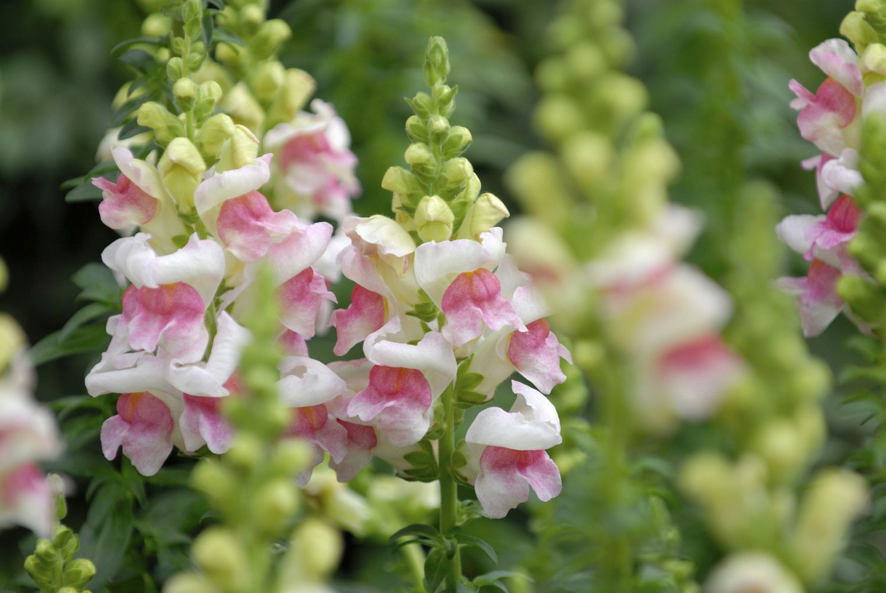

Snapdragon
Snapdragons, scientifically known as Antirrhinum majus, are popular annual or perennial flowering plants appreciated for their colorful, snap-like flowers and vertical growth habit. They are versatile plants, suitable for beds, borders, containers, and cutting gardens. Below is a comprehensive guide on snapdragons, including their types, planting procedure, and care.
Types of Snapdragons:
- Tall Varieties: These snapdragons can reach heights of up to 3 feet or more, making them ideal for adding height and vertical interest to flower beds and borders. Tall varieties often require staking or support to prevent them from flopping over.
- Intermediate Varieties: Intermediate snapdragons have a moderate height range, typically between 1 and 2 feet. They offer a good balance between tall and dwarf varieties, making them versatile for various garden settings.
- Dwarf Varieties: Dwarf snapdragons are compact plants with a height range of 6 to 12 inches. They are well-suited for edging, containers, and small gardens, where their shorter stature adds a neat and tidy appearance.
- Trailing Varieties: Trailing or cascading snapdragons have a spreading growth habit, making them excellent choices for hanging baskets, window boxes, and containers. Their trailing stems produce an abundance of colorful blooms that spill over the edges of containers.
- Double-flowered Varieties: Double-flowered snapdragons feature densely packed petals, giving them a fuller and more luxurious appearance compared to single-flowered varieties. They add a touch of elegance to garden borders and floral arrangements.
- Planting Procedure:
- Spring or Fall: Snapdragons are cool-season plants and are best planted in spring or fall. In regions with mild winters, they can also be planted in late winter.
- Sunlight: Snapdragons prefer full sun but can tolerate partial shade, especially in hot climates. Choose a planting location that receives at least 6 hours of sunlight per day.
- Soil: Snapdragons prefer well-drained soil with good fertility. The soil pH should be neutral to slightly acidic.
Weather in Kathmandu
Temperature: °C
Humidity: %
Condition:
Date & Time: